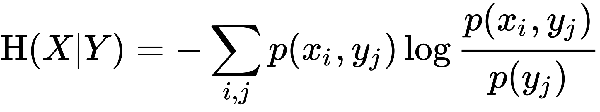
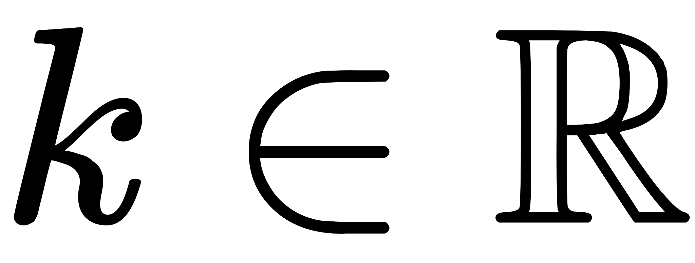
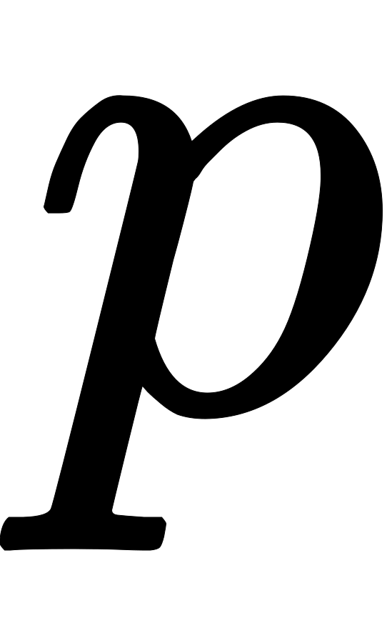
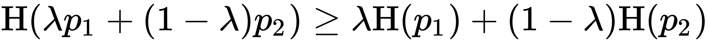
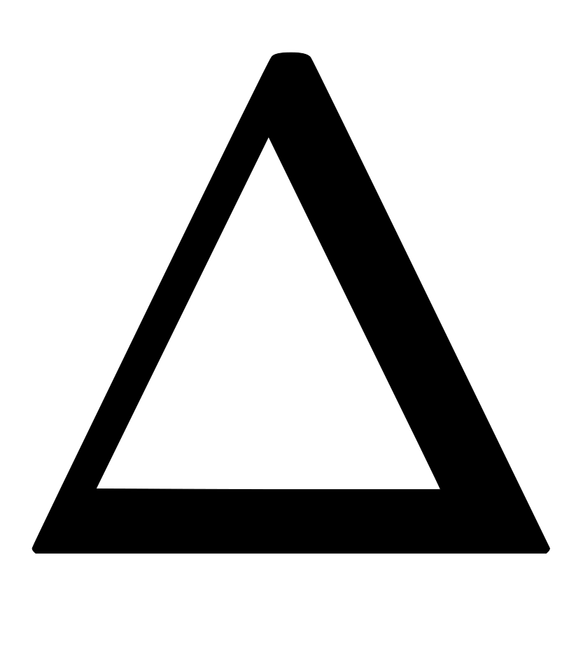

Entropy (information theory)
| This is the current revision of this page, as edited by 204.98.118.114 (talk) at 16:57, 27 July 2018 (→Introduction). The present address (URL) is a permanent link to this version. |
hideThis article has multiple issues. Please help improve it or discuss these issues on the talk page. (Learn how and when to remove these template messages)
(Learn how and when to remove this template message)
|

Information entropy is the average rate at which information is produced by a stochastic source of data.
The measure of information entropy associated with each possible data value is the negative logarithm of the probability mass function for the value. Thus, when the data source has a lower-probability value (i.e., when a low-probability event occurs), the event carries more "information" ("surprisal") than when the source data has a higher-probability value. The amount of information conveyed by each event defined in this way becomes a random variable whose expected value is the information entropy. Generally, entropy refers to disorder or uncertainty, and the definition of entropy used in information theory is directly analogous to the definition used in statistical thermodynamics. The concept of information entropy was introduced by Claude Shannon in his 1948 paper "A Mathematical Theory of Communication".[1]
The basic model of a data communication system is composed of three elements, a source of data, a communication channel, and a receiver, and – as expressed by Shannon – the "fundamental problem of communication" is for the receiver to be able to identify what data was generated by the source, based on the signal it receives through the channel.[2] The entropy provides an absolute limit on the shortest possible average length of a lossless compression encoding of the data produced by a source, and if the entropy of the source is less than the channel capacity of the communication channel, the data generated by the source can be reliably communicated to the receiver (at least in theory, possibly neglecting some practical considerations such as the complexity of the system needed to convey the data and the amount of time it may take for the data to be conveyed).
Information entropy is typically measured in bits (alternatively called "shannons") or sometimes in "natural units" (nats) or decimal digits (called "dits", "bans", or "hartleys"). The unit of the measurement depends on the base of the logarithm that is used to define the entropy.
The logarithm of the probability distribution is useful as a measure of entropy because it is additive for independent sources. For instance, the entropy of a fair coin toss is 1 bit, and the entropy of m tosses is m bits. In a straightforward representation, log2(n) bits are needed to represent a variable that can take one of n values if n is a power of 2. If these values are equally probable, the entropy (in bits) is equal to this number. If one of the values is more probable to occur than the others, an observation that this value occurs is less informative than if some less common outcome had occurred. Conversely, rarer events provide more information when observed. Since observation of less probable events occurs more rarely, the net effect is that the entropy (thought of as average information) received from non-uniformly distributed data is always less than or equal to log2(n). Entropy is zero when one outcome is certain to occur. The entropy quantifies these considerations when a probability distribution of the source data is known. The meaning of the events observed (the meaning of messages) does not matter in the definition of entropy. Entropy only takes into account the probability of observing a specific event, so the information it encapsulates is information about the underlying probability distribution, not the meaning of the events themselves.
Contents
- 1 Introduction
- 2 Definition
- 3 Example
- 4 Rationale
- 5 Aspects
- 5.1 Relationship to thermodynamic entropy
- 5.2 Entropy as information content
- 5.3 Entropy as a measure of diversity
- 5.4 Data compression
- 5.5 World's technological capacity to store and communicate information
- 5.6 Limitations of entropy as information content
- 5.7 Limitations of entropy in cryptography
- 5.8 Data as a Markov process
- 5.9 b-ary entropy
- 6 Efficiency
- 7 Characterization
- 8 Further properties
- 9 Extending discrete entropy to the continuous case
- 10 Use in combinatorics
- 11 See also
- 12 References
- 13 Further reading
- 14 External links
Introduction[edit]
The basic idea of information theory is the more one knows about a topic, the less new information one is apt to get about it. If an event is very probable, it is no surprise when it happens and thus provides little new information. Inversely, if the event was improbable, it is much more informative that the event happened. Therefore, the information content is an increasing function of the inverse of the probability of the event (1/p). Now, if more events may happen, entropy measures the average information content you can expect to get if one of the events actually happens. This implies that casting a die has more entropy than tossing a coin because each outcome of the die has smaller probability than each outcome of the coin.
Thus, entropy is a measure of unpredictability of the state, or equivalently, of its average information content. To get an intuitive understanding of these terms, consider the example of a political poll. Usually, such polls happen because the outcome of the poll is not already known. In other words, the outcome of the poll is relatively unpredictable, and actually performing the poll and learning the results gives some new information; these are just different ways of saying that the a priori entropy of the poll results is large. Now, consider the case that the same poll is performed a second time shortly after the first poll. Since the result of the first poll is already known, the outcome of the second poll can be predicted well and the results should not contain much new information; in this case the a priori entropy of the second poll result is small relative to that of the first.
Now consider the example of a coin toss. Assuming the probability of heads is the same as the probability of tails, then the entropy of the coin toss is as high as it could be. This is because there is no way to predict the outcome of the coin toss ahead of time: if we have to choose, the best we can do is predict that the coin will come up heads, and this prediction will be correct with probability 1/2. Such a coin toss has one bit of entropy since there are two possible outcomes that occur with equal probability, and learning the actual outcome contains one bit of information. In contrast, a coin toss using a coin that has two heads and no tails has zero entropy since the coin will always come up heads, and the outcome can be predicted perfectly. Analogously, one binary-outcome with equiprobable values has a Shannon entropy of bit. Similarly, one trit with equiprobable values contains (about 1.58496) bits of information because it can have one of three values.

English text, treated as a string of characters, has fairly low entropy, i.e., is fairly predictable. Even if we do not know exactly what is going to come next, we can be fairly certain that, for example, 'e' will be far more common than 'z', that the combination 'qu' will be much more common than any other combination with a 'q' in it, and that the combination 'th' will be more common than 'z', 'q', or 'qu'. After the first few letters one can often guess the rest of the word. English text has between 0.6 and 1.3 bits of entropy per character of the message.[3]
If a compression scheme is lossless—that is, you can always recover the entire original message by decompressing—then a compressed message has the same quantity of information as the original, but communicated in fewer characters. That is, it has more information, or a higher entropy, per character. This means a compressed message has less redundancy. Roughly speaking, Shannon's source coding theorem says that a lossless compression scheme cannot compress messages, on average, to have more than one bit of information per bit of message, but that any value less than one bit of information per bit of message can be attained by employing a suitable coding scheme. The entropy of a message per bit multiplied by the length of that message is a measure of how much total information the message contains.
Intuitively, imagine that we wish to transmit sequences comprising the 4 characters 'A', 'B', 'C', and 'D'. Thus, a message to be transmitted might be 'ABADDCAB'. Information theory gives a way of calculating the smallest possible amount of information that will convey this. If all 4 letters are equally likely (25%), we can do no better (over a binary channel) than to have 2 bits encode (in binary) each letter: 'A' might code as '00', 'B' as '01', 'C' as '10', and 'D' as '11'. Now suppose 'A' occurs with 70% probability, 'B' with 26%, and 'C' and 'D' with 2% each. We could assign variable length codes, so that receiving a '1' tells us to look at another bit unless we have already received 2 bits of sequential 1s. In this case, 'A' would be coded as '0' (one bit), 'B' as '10', and 'C' and 'D' as '110' and '111'. It is easy to see that 70% of the time only one bit needs to be sent, 26% of the time two bits, and only 4% of the time 3 bits. On average, then, fewer than 2 bits are required since the entropy is lower (owing to the high prevalence of 'A' followed by 'B' – together 96% of characters). The calculation of the sum of probability-weighted log probabilities measures and captures this effect.
Shannon's theorem also implies that no lossless compression scheme can shorten all messages. If some messages come out shorter, at least one must come out longer due to the pigeonhole principle. In practical use, this is generally not a problem, because we are usually only interested in compressing certain types of messages, for example English documents as opposed to gibberish text, or digital photographs rather than noise, and it is unimportant if a compression algorithm makes some unlikely or uninteresting sequences larger. However, the problem can still arise even in everyday use when applying a compression algorithm to already compressed data: for example, making a ZIP file of music, pictures or videos that are already in a compressed format such as FLAC, MP3, WebM, AAC, PNG or JPEG will generally result in a ZIP file that is slightly larger than the source file(s).[citation needed]
Definition[edit]
Named after Boltzmann's Η-theorem, Shannon defined the entropy Η (Greek capital letter eta) of a discrete random variable X with possible values {x1, ..., xn} and probability mass function P(X) as:
Here is the expected value operator, and I is the information content of X.[4][5] I(X) is itself a random variable.
The entropy can explicitly be written as
where b is the base of the logarithm used. Common values of b are 2, Euler's number e, and 10, and the corresponding units of entropy are the bits for b = 2, nats for b = e, and bans for b = 10.[6]
In the case of P(xi) = 0 for some i, the value of the corresponding summand 0 logb(0) is taken to be 0, which is consistent with the limit:
One may also define the conditional entropy of two events X and Y taking values xi and yj respectively, as
- 
where p(xi, yj) is the probability that X = xi and Y = yj. This quantity should be understood as the amount of randomness in the random variable X given the event Y.
Example[edit]
Here, the entropy is at most 1 bit, and to communicate the outcome of a coin flip (2 possible values) will require an average of at most 1 bit (exactly 1 bit for a fair coin). The result of a fair die (6 possible values) would require on average log26 bits.
Consider tossing a coin with known, not necessarily fair, probabilities of coming up heads or tails; this can be modelled as a Bernoulli process.
The entropy of the unknown result of the next toss of the coin is maximized if the coin is fair (that is, if heads and tails both have equal probability 1/2). This is the situation of maximum uncertainty as it is most difficult to predict the outcome of the next toss; the result of each toss of the coin delivers one full bit of information. This is because
However, if we know the coin is not fair, but comes up heads or tails with probabilities p and q, where p ≠ q, then there is less uncertainty. Every time it is tossed, one side is more likely to come up than the other. The reduced uncertainty is quantified in a lower entropy: on average each toss of the coin delivers less than one full bit of information. For example, if p=0.7, then
The extreme case is that of a double-headed coin that never comes up tails, or a double-tailed coin that never results in a head. Then there is no uncertainty. The entropy is zero: each toss of the coin delivers no new information as the outcome of each coin toss is always certain.
Entropy can be normalized by dividing it by information length. This ratio is called metric entropy and is a measure of the randomness of the information.
Rationale[edit]
To understand the meaning of -∑ pi log(pi), at first, try to define an information function, I, in terms of an event i with probability pi. How much information is acquired due to the observation of event i? Shannon's solution follows from the fundamental properties of information:[7]
- I(p) is monotonically decreasing in p – an increase in the probability of an event decreases the information from an observed event, and vice versa
- I(p) ≥ 0 – information is a non-negative quantity
- I(1) = 0 – events that always occur do not communicate information
- I(p1 p2) = I(p1) + I(p2) – information due to independent events is additive
The last is a crucial property. It states that joint probability of independent sources of information communicates as much information as the two individual events separately. Particularly, if the first event can yield one of n equiprobable outcomes and another has one of m equiprobable outcomes then there are mn possible outcomes of the joint event. This means that if log2(n) bits are needed to encode the first value and log2(m) to encode the second, one needs log2(mn) = log2(m) + log2(n) to encode both. Shannon discovered that the proper choice of function to quantify information, preserving this additivity, is logarithmic, i.e.,
let be the information function which one assumes to be twice continuously differentiable, one has:
This differential equation leads to the solution for any . Condition 2. leads to and especially, can be chosen on the form with , which is equivalent to choosing a specific base for the logarithm. The different units of information (bits for log2, nats for the natural logarithm ln, bans for log10 and so on) are just constant multiples of each other. For instance, in case of a fair coin toss, heads provides log2(2) = 1 bit of information, which is approximately 0.693 nats or 0.301 decimal digits. Because of additivity, n tosses provide n bits of information, which is approximately 0.693n nats or 0.301n decimal digits.

Now, suppose we have a distribution where event i can happen with probability pi. Suppose we have sampled it N times and outcome i was, accordingly, seen ni = N pi times. The total amount of information we have received is
- .
The average amount of information that we receive per event is therefore
Aspects[edit]
Relationship to thermodynamic entropy[edit]
The inspiration for adopting the word entropy in information theory came from the close resemblance between Shannon's formula and very similar known formulae from statistical mechanics.
In statistical thermodynamics the most general formula for the thermodynamic entropy S of a thermodynamic system is the Gibbs entropy,
where kB is the Boltzmann constant, and pi is the probability of a microstate. The Gibbs entropy was defined by J. Willard Gibbs in 1878 after earlier work by Boltzmann (1872).[8]
The Gibbs entropy translates over almost unchanged into the world of quantum physics to give the von Neumann entropy, introduced by John von Neumann in 1927,
where ρ is the density matrix of the quantum mechanical system and Tr is the trace.
At an everyday practical level the links between information entropy and thermodynamic entropy are not evident. Physicists and chemists are apt to be more interested in changes in entropy as a system spontaneously evolves away from its initial conditions, in accordance with the second law of thermodynamics, rather than an unchanging probability distribution. And, as the minuteness of Boltzmann's constant kB indicates, the changes in S / kB for even tiny amounts of substances in chemical and physical processes represent amounts of entropy that are extremely large compared to anything in data compression or signal processing. Furthermore, in classical thermodynamics the entropy is defined in terms of macroscopic measurements and makes no reference to any probability distribution, which is central to the definition of information entropy.
The connection between thermodynamics and what is now known as information theory was first made by Ludwig Boltzmann and expressed by his famous equation:

where S is the thermodynamic entropy of a particular macrostate (defined by thermodynamic parameters such as temperature, volume, energy, etc.), W is the number of microstates (various combinations of particles in various energy states) that can yield the given macrostate, and kB is Boltzmann's constant. It is assumed that each microstate is equally likely, so that the probability of a given microstate is pi = 1/W. When these probabilities are substituted into the above expression for the Gibbs entropy (or equivalently kB times the Shannon entropy), Boltzmann's equation results. In information theoretic terms, the information entropy of a system is the amount of "missing" information needed to determine a microstate, given the macrostate.
In the view of Jaynes (1957), thermodynamic entropy, as explained by statistical mechanics, should be seen as an application of Shannon's information theory: the thermodynamic entropy is interpreted as being proportional to the amount of further Shannon information needed to define the detailed microscopic state of the system, that remains uncommunicated by a description solely in terms of the macroscopic variables of classical thermodynamics, with the constant of proportionality being just the Boltzmann constant. For example, adding heat to a system increases its thermodynamic entropy because it increases the number of possible microscopic states of the system that are consistent with the measurable values of its macroscopic variables, thus making any complete state description longer. (See article: maximum entropy thermodynamics). Maxwell's demon can (hypothetically) reduce the thermodynamic entropy of a system by using information about the states of individual molecules; but, as Landauer (from 1961) and co-workers have shown, to function the demon himself must increase thermodynamic entropy in the process, by at least the amount of Shannon information he proposes to first acquire and store; and so the total thermodynamic entropy does not decrease (which resolves the paradox). Landauer's principle imposes a lower bound on the amount of heat a computer must generate to process a given amount of information, though modern computers are far less efficient.
Entropy as information content[edit]
Entropy is defined in the context of a probabilistic model. Independent fair coin flips have an entropy of 1 bit per flip. A source that always generates a long string of B's has an entropy of 0, since the next character will always be a 'B'.
The entropy rate of a data source means the average number of bits per symbol needed to encode it. Shannon's experiments with human predictors show an information rate between 0.6 and 1.3 bits per character in English;[9] the PPM compression algorithm can achieve a compression ratio of 1.5 bits per character in English text.
From the preceding example, note the following points:
- The amount of entropy is not always an integer number of bits.
- Many data bits may not convey information. For example, data structures often store information redundantly, or have identical sections regardless of the information in the data structure.
Shannon's definition of entropy, when applied to an information source, can determine the minimum channel capacity required to reliably transmit the source as encoded binary digits (see caveat below in italics). The formula can be derived by calculating the mathematical expectation of the amount of information contained in a digit from the information source. See also Shannon–Hartley theorem.
Shannon's entropy measures the information contained in a message as opposed to the portion of the message that is determined (or predictable). Examples of the latter include redundancy in language structure or statistical properties relating to the occurrence frequencies of letter or word pairs, triplets etc. See Markov chain.
Entropy as a measure of diversity[edit]
Entropy is one of several ways to measure diversity. Specifically, Shannon entropy is the logarithm of 1D, the true diversity index with parameter equal to 1.
Data compression[edit]
Entropy effectively bounds the performance of the strongest lossless compression possible, which can be realized in theory by using the typical set or in practice using Huffman, Lempel–Ziv or arithmetic coding. See also Kolmogorov complexity. In practice, compression algorithms deliberately include some judicious redundancy in the form of checksums to protect against errors.
World's technological capacity to store and communicate information[edit]
A 2011 study in Science estimates the world's technological capacity to store and communicate optimally compressed information normalized on the most effective compression algorithms available in the year 2007, therefore estimating the entropy of the technologically available sources.[10]
| Type of Information | 1986 | 2007 |
|---|---|---|
| Storage | 2.6 | 295 |
| Broadcast | 432 | 1900 |
| Telecommunications | 0.281 | 65 |
The authors estimate humankind technological capacity to store information (fully entropically compressed) in 1986 and again in 2007. They break the information into three categories—to store information on a medium, to receive information through a one-way broadcast networks, or to exchange information through two-way telecommunication networks.[10]
Limitations of entropy as information content[edit]
There are a number of entropy-related concepts that mathematically quantify information content in some way:
- the self-information of an individual message or symbol taken from a given probability distribution,
- the entropy of a given probability distribution of messages or symbols, and
- the entropy rate of a stochastic process.
(The "rate of self-information" can also be defined for a particular sequence of messages or symbols generated by a given stochastic process: this will always be equal to the entropy rate in the case of a stationary process.) Other quantities of information are also used to compare or relate different sources of information.
It is important not to confuse the above concepts. Often it is only clear from context which one is meant. For example, when someone says that the "entropy" of the English language is about 1 bit per character, they are actually modeling the English language as a stochastic process and talking about its entropy rate. Shannon himself used the term in this way.
However, if we use very large blocks, then the estimate of per-character entropy rate may become artificially low. This is because in reality, the probability distribution of the sequence is not knowable exactly; it is only an estimate. For example, suppose one considers the text of every book ever published as a sequence, with each symbol being the text of a complete book. If there are N published books, and each book is only published once, the estimate of the probability of each book is 1/N, and the entropy (in bits) is −log2(1/N) = log2(N). As a practical code, this corresponds to assigning each book a unique identifier and using it in place of the text of the book whenever one wants to refer to the book. This is enormously useful for talking about books, but it is not so useful for characterizing the information content of an individual book, or of language in general: it is not possible to reconstruct the book from its identifier without knowing the probability distribution, that is, the complete text of all the books. The key idea is that the complexity of the probabilistic model must be considered. Kolmogorov complexity is a theoretical generalization of this idea that allows the consideration of the information content of a sequence independent of any particular probability model; it considers the shortest program for a universal computer that outputs the sequence. A code that achieves the entropy rate of a sequence for a given model, plus the codebook (i.e. the probabilistic model), is one such program, but it may not be the shortest.
For example, the Fibonacci sequence is 1, 1, 2, 3, 5, 8, 13, …. Treating the sequence as a message and each number as a symbol, there are almost as many symbols as there are characters in the message, giving an entropy of approximately log2(n). So the first 128 symbols of the Fibonacci sequence has an entropy of approximately 7 bits/symbol. However, the sequence can be expressed using a formula [F(n) = F(n−1) + F(n−2) for n = 3, 4, 5, …, F(1) =1, F(2) = 1] and this formula has a much lower entropy and applies to any length of the Fibonacci sequence.
Limitations of entropy in cryptography[edit]
In cryptanalysis, entropy is often roughly used as a measure of the unpredictability of a cryptographic key, though its real uncertainty is unmeasurable. For example, a 128-bit key that is uniformly randomly generated has 128 bits of entropy. It also takes (on average) guesses to break by brute force. However, entropy fails to capture the number of guesses required if the possible keys are not chosen uniformly.[11][12] Instead, a measure called guesswork can be used to measure the effort required for a brute force attack.[13]
Other problems may arise from non-uniform distributions used in cryptography. For example, consider a 1000000-digit binary one-time pad using exclusive or. If the pad has 1000000 bits of entropy, it is perfect. If the pad has 999999 bits of entropy, evenly distributed (each individual bit of the pad having 0.999999 bits of entropy) it may provide good security. But if the pad has 999999 bits of entropy, where the first bit is fixed and the remaining 999999 bits are perfectly random, then the first bit of the ciphertext will not be encrypted at all.
Data as a Markov process[edit]
A common way to define entropy for text is based on the Markov model of text. For an order-0 source (each character is selected independent of the last characters), the binary entropy is:
where pi is the probability of i. For a first-order Markov source (one in which the probability of selecting a character is dependent only on the immediately preceding character), the entropy rate is:
where i is a state (certain preceding characters) and is the probability of j given i as the previous character.
For a second order Markov source, the entropy rate is
b-ary entropy[edit]
In general the b-ary entropy of a source = (S, P) with source alphabet S = {a1, …, an} and discrete probability distribution P = {p1, …, pn} where pi is the probability of ai (say pi = p(ai)) is defined by:

Note: the b in "b-ary entropy" is the number of different symbols of the ideal alphabet used as a standard yardstick to measure source alphabets. In information theory, two symbols are necessary and sufficient for an alphabet to encode information. Therefore, the default is to let b = 2 ("binary entropy"). Thus, the entropy of the source alphabet, with its given empiric probability distribution, is a number equal to the number (possibly fractional) of symbols of the "ideal alphabet", with an optimal probability distribution, necessary to encode for each symbol of the source alphabet. Also note that "optimal probability distribution" here means a uniform distribution: a source alphabet with n symbols has the highest possible entropy (for an alphabet with n symbols) when the probability distribution of the alphabet is uniform. This optimal entropy turns out to be logb(n).
Efficiency[edit]
A source alphabet with non-uniform distribution will have less entropy than if those symbols had uniform distribution (i.e. the "optimized alphabet"). This deficiency in entropy can be expressed as a ratio called efficiency[This quote needs a citation]:
Efficiency has utility in quantifying the effective use of a communications channel. This formulation is also referred to as the normalized entropy, as the entropy is divided by the maximum entropy .
Characterization[edit]
Shannon entropy is characterized by a small number of criteria, listed below. Any definition of entropy satisfying these assumptions has the form
where K is a constant corresponding to a choice of measurement units.
In the following, pi = Pr(X = xi) and Ηn(p1, …, pn) = Η(X).
Continuity[edit]
The measure should be continuous, so that changing the values of the probabilities by a very small amount should only change the entropy by a small amount.
Symmetry[edit]
The measure should be unchanged if the outcomes xi are re-ordered.
- etc.
Maximum[edit]
The measure should be maximal if all the outcomes are equally likely (uncertainty is highest when all possible events are equiprobable).
For equiprobable events the entropy should increase with the number of outcomes.
For continuous random variables, the multivariate Gaussian is the distribution with maximum differential entropy.
Additivity[edit]
The amount of entropy should be independent of how the process is regarded as being divided into parts.
This last functional relationship characterizes the entropy of a system with sub-systems. It demands that the entropy of a system can be calculated from the entropies of its sub-systems if the interactions between the sub-systems are known.
Given an ensemble of n uniformly distributed elements that are divided into k boxes (sub-systems) with b1, ..., bk elements each, the entropy of the whole ensemble should be equal to the sum of the entropy of the system of boxes and the individual entropies of the boxes, each weighted with the probability of being in that particular box.
For positive integers bi where b1 + … + bk = n,
Choosing k = n, b1 = … = bn = 1 this implies that the entropy of a certain outcome is zero: Η1(1) = 0. This implies that the efficiency of a source alphabet with n symbols can be defined simply as being equal to its n-ary entropy. See also Redundancy (information theory).
Further properties[edit]
The Shannon entropy satisfies the following properties, for some of which it is useful to interpret entropy as the amount of information learned (or uncertainty eliminated) by revealing the value of a random variable X:
- Adding or removing an event with probability zero does not contribute to the entropy:
- .

- The entropy of a discrete random variable is a nonnegative number:
- .
- It can be confirmed using the Jensen inequality that
- .
- This maximal entropy of logb(n) is effectively attained by a source alphabet having a uniform probability distribution: uncertainty is maximal when all possible events are equiprobable.
- The entropy or the amount of information revealed by evaluating (X,Y) (that is, evaluating X and Y simultaneously) is equal to the information revealed by conducting two consecutive experiments: first evaluating the value of Y, then revealing the value of X given that you know the value of Y. This may be written as
- If Y = f(X) where f is a function, then Η(f(X)|X) = 0. Applying the previous formula to Η(X, f(X)) yields
- so Η(f(X)) ≤ Η(X), thus the entropy of a variable can only decrease when the latter is passed through a function.

{kind=link}
- If X and Y are two independent random variables, then knowing the value of Y doesn't influence our knowledge of the value of X (since the two don't influence each other by independence):
- The entropy of two simultaneous events is no more than the sum of the entropies of each individual event, and are equal if the two events are independent. More specifically, if X and Y are two random variables on the same probability space, and (X, Y) denotes their Cartesian product, then
- The entropy is concave in the probability mass function , i.e.
- 
for all probability mass functions and .
Extending discrete entropy to the continuous case[edit]
Differential entropy[edit]
The Shannon entropy is restricted to random variables taking discrete values. The corresponding formula for a continuous random variable with probability density function f(x) with finite or infinite support on the real line is defined by analogy, using the above form of the entropy as an expectation:
This formula is usually referred to as the continuous entropy, or differential entropy. A precursor of the continuous entropy h[f] is the expression for the functional Η in the H-theorem of Boltzmann.
Although the analogy between both functions is suggestive, the following question must be set: is the differential entropy a valid extension of the Shannon discrete entropy? Differential entropy lacks a number of properties that the Shannon discrete entropy has – it can even be negative – and thus corrections have been suggested, notably limiting density of discrete points.
To answer this question, we must establish a connection between the two functions:
We wish to obtain a generally finite measure as the bin size goes to zero. In the discrete case, the bin size is the (implicit) width of each of the n (finite or infinite) bins whose probabilities are denoted by pn. As we generalize to the continuous domain, we must make this width explicit.
To do this, start with a continuous function f discretized into bins of size . By the mean-value theorem there exists a value xi in each bin such that
and thus the integral of the function f can be approximated (in the Riemannian sense) by
where this limit and "bin size goes to zero" are equivalent.
We will denote
and expanding the logarithm, we have
As Δ → 0, we have
But note that log(Δ) → −∞ as Δ → 0, therefore we need a special definition of the differential or continuous entropy:
which is, as said before, referred to as the differential entropy. This means that the differential entropy is not a limit of the Shannon entropy for n → ∞. Rather, it differs from the limit of the Shannon entropy by an infinite offset (see also the article on information dimension)
Limiting density of discrete points[edit]
It turns out as a result that, unlike the Shannon entropy, the differential entropy is not in general a good measure of uncertainty or information. For example, the differential entropy can be negative; also it is not invariant under continuous co-ordinate transformations. This problem may be illustrated by a change of units when x is a dimensioned variable. f(x) will then have the units of 1/x. The argument of the logarithm must be dimensionless, otherwise it is improper, so that the differential entropy as given above will be improper. If Δ is some "standard" value of x (i.e. "bin size") and therefore has the same units, then a modified differential entropy may be written in proper form as:
and the result will be the same for any choice of units for x. In fact, the limit of discrete entropy as would also include a term of , which would in general be infinite. This is expected, continuous variables would typically have infinite entropy when discretized. The limiting density of discrete points is really a measure of how much easier a distribution is to describe than a distribution that is uniform over its quantization scheme.
Relative entropy[edit]
Another useful measure of entropy that works equally well in the discrete and the continuous case is the relative entropy of a distribution. It is defined as the Kullback–Leibler divergence from the distribution to a reference measure m as follows. Assume that a probability distribution p is absolutely continuous with respect to a measure m, i.e. is of the form p(dx) = f(x)m(dx) for some non-negative m-integrable function f with m-integral 1, then the relative entropy can be defined as
In this form the relative entropy generalises (up to change in sign) both the discrete entropy, where the measure m is the counting measure, and the differential entropy, where the measure m is the Lebesgue measure. If the measure m is itself a probability distribution, the relative entropy is non-negative, and zero if p = m as measures. It is defined for any measure space, hence coordinate independent and invariant under co-ordinate reparameterizations if one properly takes into account the transformation of the measure m. The relative entropy, and implicitly entropy and differential entropy, do depend on the "reference" measure m.
Use in combinatorics[edit]
Entropy has become a useful quantity in combinatorics.
Loomis–Whitney inequality[edit]
A simple example of this is an alternate proof of the Loomis–Whitney inequality: for every subset A ⊆ Zd, we have
where Pi is the orthogonal projection in the ith coordinate:
The proof follows as a simple corollary of Shearer's inequality: if X1, …, Xd are random variables and S1, …, Sn are subsets of {1, …, d} such that every integer between 1 and d lies in exactly r of these subsets, then
where is the Cartesian product of random variables Xj with indexes j in Si (so the dimension of this vector is equal to the size of Si).
We sketch how Loomis–Whitney follows from this: Indeed, let X be a uniformly distributed random variable with values in A and so that each point in A occurs with equal probability. Then (by the further properties of entropy mentioned above) Η(X) = log|A|, where |A| denotes the cardinality of A. Let Si = {1, 2, …, i−1, i+1, …, d}. The range of is contained in Pi(A) and hence . Now use this to bound the right side of Shearer's inequality and exponentiate the opposite sides of the resulting inequality you obtain.
Approximation to binomial coefficient[edit]
For integers 0 < k < n let q = k/n. Then
where
Here is a sketch proof. Note that is one term of the expression
Rearranging gives the upper bound. For the lower bound one first shows, using some algebra, that it is the largest term in the summation. But then,
since there are n + 1 terms in the summation. Rearranging gives the lower bound.
A nice interpretation of this is that the number of binary strings of length n with exactly k many 1's is approximately .[15]
See also[edit]
{kind=link}
{kind=link}
- Conditional entropy
- Cross entropy – is a measure of the average number of bits needed to identify an event from a set of possibilities between two probability distributions
- Diversity index – alternative approaches to quantifying diversity in a probability distribution
- Entropy (arrow of time)
- Entropy encoding – a coding scheme that assigns codes to symbols so as to match code lengths with the probabilities of the symbols.
- Entropy estimation
- Entropy power inequality
- Entropy rate
- Fisher information
- Graph entropy
- Hamming distance
- History of entropy
- History of information theory
- Information geometry
- Joint entropy – is the measure how much entropy is contained in a joint system of two random variables.
- Kolmogorov–Sinai entropy in dynamical systems
- Levenshtein distance
- Mutual information
- Negentropy
- Perplexity
- Qualitative variation – other measures of statistical dispersion for nominal distributions
- Quantum relative entropy – a measure of distinguishability between two quantum states.
- Rényi entropy – a generalization of Shannon entropy; it is one of a family of functionals for quantifying the diversity, uncertainty or randomness of a system.
- Randomness
- Shannon index
- Theil index
- Typoglycemia
References[edit]
- Jump up ^ Shannon, Claude E. (July–October 1948). "A Mathematical Theory of Communication". Bell System Technical Journal. 27 (3): 379–423. doi:10.1002/j.1538-7305.1948.tb01338.x. (PDF, archived from here)
- Jump up ^ Shannon, Claude E. (1948). "A Mathematical Theory of Communication" (PDF). Bell Systems Technical Journal. 27., July and October, pp. 379–423 and 623–656.
- Jump up ^ Schneier, B: Applied Cryptography, Second edition, page 234. John Wiley and Sons.
- Jump up ^ Borda, Monica (2011). Fundamentals in Information Theory and Coding. Springer. p. 11. ISBN 978-3-642-20346-6.
- Jump up ^ Han, Te Sun & Kobayashi, Kingo (2002). Mathematics of Information and Coding. American Mathematical Society. pp. 19–20. ISBN 978-0-8218-4256-0.
- Jump up ^ Schneider, T.D, Information theory primer with an appendix on logarithms, National Cancer Institute, 14 April 2007.
- Jump up ^ Carter, Tom (March 2014). An introduction to information theory and entropy (PDF). Santa Fe. Retrieved 4 August 2017.
- Jump up ^ Compare: Boltzmann, Ludwig (1896, 1898). Vorlesungen über Gastheorie : 2 Volumes – Leipzig 1895/98 UB: O 5262-6. English version: Lectures on gas theory. Translated by Stephen G. Brush (1964) Berkeley: University of California Press; (1995) New York: Dover ISBN 0-486-68455-5
- Jump up ^ Mark Nelson (24 August 2006). "The Hutter Prize". Retrieved 2008-11-27.
- ^ Jump up to: a b "The World's Technological Capacity to Store, Communicate, and Compute Information", Martin Hilbert and Priscila López (2011), Science, 332(6025), 60–65; free access to the article through here: martinhilbert.net/WorldInfoCapacity.html
- Jump up ^ Massey, James (1994). "Guessing and Entropy" (PDF). Proc. IEEE International Symposium on Information Theory. Retrieved 31 December 2013.
- Jump up ^ Malone, David; Sullivan, Wayne (2005). "Guesswork is not a Substitute for Entropy" (PDF). Proceedings of the Information Technology & Telecommunications Conference. Retrieved 31 December 2013.
- Jump up ^ Pliam, John (1999). "Guesswork and variation distance as measures of cipher security". International Workshop on Selected Areas in Cryptography. Retrieved 23 October 2016.
- Jump up ^ Aoki, New Approaches to Macroeconomic Modeling. page 43.
- Jump up ^ Probability and Computing, M. Mitzenmacher and E. Upfal, Cambridge University Press
This article incorporates material from Shannon's entropy on PlanetMath, which is licensed under the Creative Commons Attribution/Share-Alike License.
Further reading[edit]
Textbooks on information theory[edit]
- Arndt, C. (2004), Information Measures: Information and its Description in Science and Engineering, Springer, ISBN 978-3-540-40855-0
- Cover, T. M., Thomas, J. A. (2006), Elements of information theory, 2nd Edition. Wiley-Interscience. ISBN 0-471-24195-4.
- Gray, R. M. (2011), Entropy and Information Theory, Springer.
- MacKay, David J. C.. Information Theory, Inference, and Learning Algorithms Cambridge: Cambridge University Press, 2003. ISBN 0-521-64298-1
- Martin, Nathaniel F.G. & England, James W. (2011). Mathematical Theory of Entropy. Cambridge University Press. ISBN 978-0-521-17738-2.
- Shannon, C.E., Weaver, W. (1949) The Mathematical Theory of Communication, Univ of Illinois Press. ISBN 0-252-72548-4
- Stone, J. V. (2014), Chapter 1 of Information Theory: A Tutorial Introduction, University of Sheffield, England. ISBN 978-0956372857.
External links[edit]
This article's use of external links may not follow Wikipedia's policies or guidelines. (June 2015) (Learn how and when to remove this template message) |
| Library resources about Entropy (information theory) |
- Hazewinkel, Michiel, ed. (2001) [1994], "Entropy", Encyclopedia of Mathematics, Springer Science+Business Media B.V. / Kluwer Academic Publishers, ISBN 978-1-55608-010-4
- Introduction to entropy and information on Principia Cybernetica Web
- Entropy an interdisciplinary journal on all aspect of the entropy concept. Open access.
- Description of information entropy from "Tools for Thought" by Howard Rheingold
- A java applet representing Shannon's Experiment to Calculate the Entropy of English
- Slides on information gain and entropy
- An Intuitive Guide to the Concept of Entropy Arising in Various Sectors of Science – a wikibook on the interpretation of the concept of entropy.
- Network Event Detection With Entropy Measures, Dr. Raimund Eimann, University of Auckland, PDF; 5993 kB – a PhD thesis demonstrating how entropy measures may be used in network anomaly detection.
- Rosetta Code repository of implementations of Shannon entropy in different programming languages.
- "Information Theory for Intelligent People". Short introduction to the axioms of information theory, entropy, mutual information, Kullback–Liebler divergence, and Jensen–Shannon distance.
- Online tool for calculating entropy (plain text)
- Online tool for calculating entropy (binary)